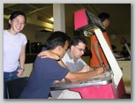
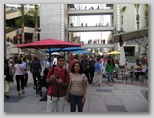
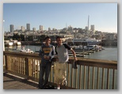
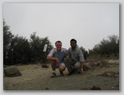
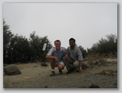
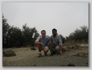

Caltech Memories (60 images)
Click a picture to see a larger view.




. I've spent one unforgettable year in their company! Abhishek is a brilliant graduate student in number-theory in the Caltech Math department while Sukhada is a Math undergrad about to start her graduate studies at Stanford (most probably) in Fall 2007. During this strenuous hike, we came across some hunters and heard several gun-shots (not necessarily in that order). No one was hurt, several were scared ;) (October 2005)") 
